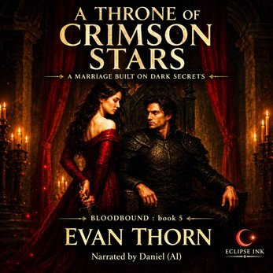

A Throne of Crimson Stars
Available on itch.io
Get the audiobookPrincess Maeryn Starfell expected to die the day her kingdom fell. Instead, she was offered a crown of chains - bound in a political marriage to the man who conquered her homeland. General Kade Ironcrest, the Bloodbound warlord feared across the empire, becomes her husband not by choice, but by decree of a prophecy older than any throne.
Maeryn vows to dismantle him from within. Kade vows to keep her alive long enough to secure peace in a realm on the edge of rebellion. Neither expects the fragile alliance forming between them - an alliance threatened by court intrigue, assassins lurking behind every banner, and the whisper of ancient stars that seem to watch their every move.
But as Maeryn steps into a world of treachery and forbidden magic, she discovers a devastating truth: the prophecy that doomed her family speaks of her as well - and her fate is entwined with Kade's in ways neither of them can escape.
When rival Houses rise, when the Crimson Throne begins to crack beneath the weight of secrets, Maeryn must choose. Will she reclaim her power and challenge the empire that stole her future, or stand beside the man she was meant to hate and shape a new destiny from the ruins?
And as their enemies close in, one truth becomes impossible to ignore:
Sometimes the only thing more dangerous than a marriage of enemies... is a bond powerful enough to rewrite fate itself.